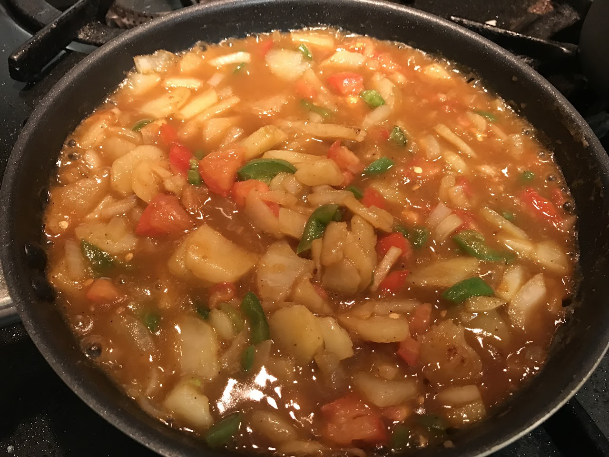

Live → Blog
June 9, 2019

In my usual quest to expand my comfort zone, I decided to live off campus last summer. Through Stanford connections, I was able to secure a shared house in East Palo Alto for a reasonable amount (for the area) with 3 roommates. It was a large house with 4 bedrooms and 3 bathrooms, a shared kitchen, living room, and dining area. My favorite part of the house was the kitchen. The inspiration for the decision to live off campus was my view that the Stanford Dining Meal Plan is not worth its high price, and bundling it with on-campus undergraduate housing is daylight robbery. It is for this reason that I sought to expand my comfort zone by committing to cook my meals for 3 months. Of course I did not cook all my meals during that period, but the goal was to prove that I could live off campus, eat as well — if not better— and spend less on both housing and food. It was still cheaper including the cost of transportation between East Palo Alto and campus for the 3 months. In the cost of transportation I chose to ignore the cost of spending two hours on public transit every week day because they were offset by the benefit I derived from having the time to read books again. That is how I started my journey towards becoming a house husband. I have a disclaimer about this aspiration of mine in my concluding paragraph.
I found spiritual fulfillment in the preparation of my own food. Each day as I prepared each meal, I was led to reflect on the gift of life: my own, that of the plants and animals that had lived and died (in whole or in part) that I may live on. As I cooked, I had to think about what I was bringing into my body, which in some religious beliefs is believed to be a temple of something divine. I admit in the US it is a bit challenging to find healthful food, but to the extent that I was able, I attempted to maximize the nutritional benefit of each meal. This influenced the ingredients I chose and the way I cooked the food. Sometimes the cooking was not successful. From this I was reminded that perfection is an asymptote after which we will always strive, but often we will fall short of it. In any case, we eat the imperfect food, (because it would be a disrespect to the lives of the plants and the animals to throw it away), in remembrance of this fact. Although I still tried to perfect the presentation of food on my plate, I have accepted the wisdom that food is for eating and not for looking at. Then with a warm tummy and a full heart, when I washed up the utensils I used in preparing the meal, my being radiated gratitude to every part of the universe that worked in unison to bring me such joy. In such moments I prayed for the universe to reconfigure in order to bring the joy of nutrition to those who do not have it, that they too may sleep with hearts overflowing with joy.
It is with the memory of this experience, that I am once again excited by my upcoming move off campus. This time I am moving to the very expensive Palo Alto, but the rent is still affordable since I will be living in university subsidized housing. I will be commuting to school by bike, 30 minutes of unavoidable exercise each day. I will be in a 2 bedroom and one bathroom apartment, with a shared kitchen and shared living room. Over the summer I will be assigned a random housemate, but in the fall I will live with one of my African brothers from Ethiopia. It is going to be great. This is of course a period of transition in my life as the undergraduate part of my Stanford journey closes, and my graduate one kicks in. I also recently turned 25, so I am thinking a lot about life in the long run. In my ideal life at steady-state, I will be a house husband at least half of the week (3 days and a half days per week). This may not necessarily be 3 full days, but the equivalence of half of my "productive" week will be devoted to family life. I am establishing this blog to share my journey as I develop the necessary skills to be a successful house husband for my future wife and kids. I hope to share my journey developing my cooking, home decor, and other general housekeeping skills.
Disclaimer: I recognize that this might come off as an instance of another privileged person trivializing other people's real daily tasks by turning them into hobbies. I acknowledge that as a straight man in this patriarchal society, who also carries the privilege of elite institutions like Stanford, UWC, and perhaps the MasterCard Foundation, I have a considerable amount of privilege. That said, it is not my intention to trivialize housekeeping into a hobby. Rather, as I continue to unlearn the harmful ways of my socialization, especially that enable an environment that oppresses women and other minorities, I aim to challenge the scripts of how marriage should look like. Through my own personal example, I hope to inspire other men to challenge the traditional gender roles that often inhibit the goals of women who end up deciding to have families. I do not anticipate it will be an easy road, especially as a highly ambitious person myself. But through this journey, I hope to find a way to make it work when the time comes.
← Return to Blog